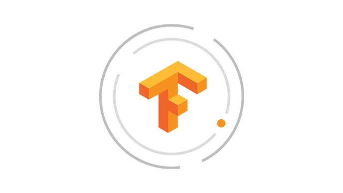

- HTML
- CSS
- JavaScript
HTML
WEB
TensorFlow is Google Brain's second-generation system.
Version 1.0.0 was released on February 11, 2017.
While the reference implementation runs on single devices,
TensorFlow can run on multiple CPUs and GPUs
(with optional CUDA and SYCL extensions for general-purpose computing on graphics processing units).
TensorFlow is available on 64-bit Linux, macOS, Windows, and mobile computing platforms including Android and iOS.
Its flexible architecture allows for the easy deployment of computation across a variety of platforms
(CPUs, GPUs, TPUs), and from desktops to clusters of servers to mobile and edge devices.
TensorFlow computations are expressed as stateful dataflow graphs.
The name TensorFlow derives from the operations that such neural networks perform on multidimensional data arrays.
These arrays are referred to as "tensors".
In June 2016, Dean stated that 1,500 repositories on GitHub mentioned TensorFlow, of which only 5 were from Google.
